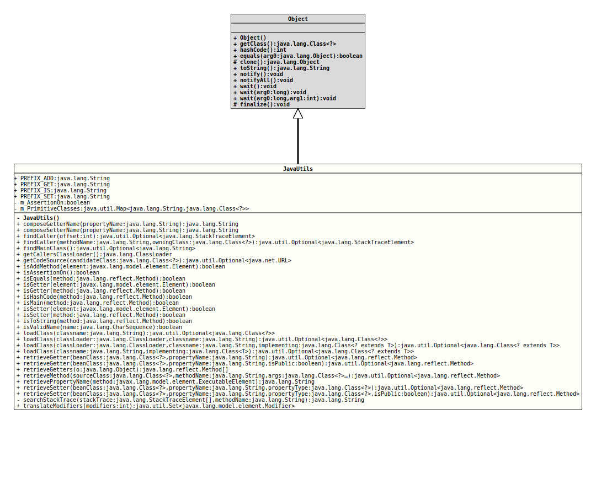

This class provides a bunch of helper methods that deal with the Java language itself and some related areas. In general, they are wrapping somehow the introspection and the reflection frameworks.
All methods of this class are static, so no instance of this class is allowed.
- Author:
- Thomas Thrien (thomas.thrien@tquadrat.org)
- Version:
- $Id: JavaUtils.java 1060 2023-09-24 19:21:40Z tquadrat $
- Since:
- 0.0.5
- UML Diagram
-

UML Diagram for "org.tquadrat.foundation.util.JavaUtils"
{kind=link}
-
Field Summary
FieldsModifier and TypeFieldDescriptionprivate static booleanThe flag that tracks the assertion on/off status for this package.Unfortunately,Class.forName(String, boolean, ClassLoader)will not work for the classes of the primitive types.static final StringThe prefix for the name of an 'add' method: "add"static final StringThe prefix for the name of a getter method: "get".static final StringThe prefix for the name of a getter method that returns abooleanvalue: "is".static final StringThe prefix for the name of a setter method: "set" -
Constructor Summary
Constructors -
Method Summary
Modifier and TypeMethodDescriptionstatic final StringcomposeGetterName(String propertyName) Creates the name for the getter method for the property with the given name.static final StringcomposeSetterName(String propertyName) Creates the name for the setter method for the property with the given name.static final Optional<StackTraceElement> findCaller(int offset) This method will find the caller for the method that calls this one and returns the appropriate stack trace element.static final Optional<StackTraceElement> findCaller(String methodName, Class<?> owningClass) This method will find the caller for the method that is identified by its name and class, and returns the appropriate stack trace element.Tries to identify the class with themain()method that started the application.static final ClassLoaderRetrieves theClassLoaderthat loaded the class of the method that called the method that called this method.getCodeSource(Class<?> candidateClass) Retrieves the location from where the code for the given class was loaded.static final booleanisAddMethod(Element element) Checks if the given element is an 'add' method or not.static final booleanChecks whether JDK assertion is currently activated, meaning that the program was started with the command line flags-eaor-enableassertions.static final booleanChecks if the given method is the methodequals()as defined by the classObject.static final booleanChecks whether the given method is a getter method or not.static final booleanChecks whether the given element is a getter method or not.static final booleanisHashCode(Method method) Checks if the given method is the methodhashCode()as defined by the classObject.static final booleanChecks if the given method is amain()method or not.static final booleanChecks if the given method is a setter method or not.static final booleanChecks if the given element is a setter method or not.static final booleanisToString(Method method) Checks if the given method is the methodtoString()as defined by the classObject.static final booleanisValidName(CharSequence name) Checks whether the given String is a valid Java name.
This method will returntruefor restricted keywords, but not forvar.loadClass(ClassLoader classLoader, String classname) Loads the class with the given name, using the givenClassLoaderinstance, and returns that class.loadClass(ClassLoader classLoader, String classname, Class<? extends T> implementing) Loads the class with the given name, using the givenClassLoaderinstance, and returns that class, wrapped in an instance ofOptional.Loads the class with the given name, using the instance ofClassLoaderthat loaded the caller's class, and returns that class.If no class with that name could be found by that instance ofClassLoader, or if it does not implement the given interface/extend the given class, no exception will be thrown; instead this method will return an emptyOptional.
Loads the class with the given name, using the instance ofClassLoaderthat loaded the caller's class, and returns that class, wrapped in an instance ofOptional.retrieveGetter(Class<?> beanClass, String propertyName) Retrieves the public getter for the property with the given name.retrieveGetter(Class<?> beanClass, String propertyName, boolean isPublic) Retrieves the getter for the property with the given name.static final Method[]Returns all the getter methods from the given object.
getter methods ...retrieveMethod(Class<?> sourceClass, String methodName, Class<?>... args) Retrieves the public method with the given signature from the given class.static final StringretrieveSetter(Class<?> beanClass, String propertyName, Class<?> propertyType) Retrieves the public setter for the property with the given name.retrieveSetter(Class<?> beanClass, String propertyName, Class<?> propertyType, boolean isPublic) Retrieves the setter for the property with the given name.
For some purposes, non-public setters are quite useful; whenisPublicis provided asfalse, this method will also return those setters.private static final StringsearchStackTrace(StackTraceElement[] stackTrace, String methodName) Searches the given stack trace for references to the method with the given name and returns the name for the respective class.translateModifiers(int modifiers) Translates the integer value for the modifiers for a class, method or field as it is used by reflection to theenumvalues fromModifier.
-
Field Details
-
PREFIX_ADD
The prefix for the name of an 'add' method: "add"- See Also:
-
PREFIX_GET
The prefix for the name of a getter method: "get".- See Also:
-
PREFIX_IS
The prefix for the name of a getter method that returns abooleanvalue: "is".- See Also:
-
PREFIX_SET
The prefix for the name of a setter method: "set"- See Also:
-
m_AssertionOn
The flag that tracks the assertion on/off status for this package. -
m_PrimitiveClasses
Unfortunately,Class.forName(String, boolean, ClassLoader)will not work for the classes of the primitive types. To enableloadClass(ClassLoader, String)to return those classes, we use this table.
-
-
Constructor Details
-
JavaUtils
private JavaUtils()No instance allowed for this class.
-
-
Method Details
-
composeGetterName
@API(status=STABLE, since="0.0.5") public static final String composeGetterName(String propertyName) Creates the name for the getter method for the property with the given name. It will always be generated with 'get', names forbooleanproperties (that usually do start with 'is') are not generated.- Parameters:
propertyName- The name of the property.- Returns:
- The name for the getter of the respective property.
-
composeSetterName
@API(status=STABLE, since="0.0.5") public static final String composeSetterName(String propertyName) Creates the name for the setter method for the property with the given name.- Parameters:
propertyName- The name of the property.- Returns:
- The name for the setter of the respective property.
-
findCaller
@API(status=STABLE, since="0.0.5") public static final Optional<StackTraceElement> findCaller(int offset) This method will find the caller for the method that calls this one and returns the appropriate stack trace element.
The
offsetdetermines which caller's stack trace element will be returned:- this method
- the caller of this method
- the caller's caller
- … and so on
- Parameters:
offset- The offset on the stack for the correct entry.- Returns:
- An instance of
Optionalthat holds the stack trace element for the caller; will be empty if the offset is too high (higher than the number of call levels).
-
findCaller
@API(status=STABLE, since="0.1.0") public static final Optional<StackTraceElement> findCaller(String methodName, Class<?> owningClass) This method will find the caller for the method that is identified by its name and class, and returns the appropriate stack trace element.
The return value is empty when the provided method is not on the stack trace.
- Parameters:
methodName- The name of the method that we need the caller for.owningClass- The class for the called method.- Returns:
- An instance of
Optionalthat holds the stack trace element for the caller.
-
findMainClass
Tries to identify the class with the
main()method that started the application.There are several reasons why this could fail:
- There is a
SecurityManagerin place that forbids to access the necessary information. - The
mainthread is already dead. This could happen with applications having a graphical user interface, or where the main class is mere starter for the real application threads. - The code was not started as a program at all; this could be the fact for applets, or when it is started as a script.
- Returns:
- An instance of
Optionalthat holds the name of the main class.
- There is a
-
getCallersClassLoader
Retrieves the
ClassLoaderthat loaded the class of the method that called the method that called this method.If the class of the caller's caller was loaded by the Bootstrap classloader, the return value would be
null, but this method will return the Platform classloader instead.- Returns:
- The caller's
ClassLoader. - Since:
- 0.0.6
- See Also:
-
getCodeSource
@API(status=STABLE, since="0.0.5") public static final Optional<URL> getCodeSource(Class<?> candidateClass) Retrieves the location from where the code for the given class was loaded.
No location will be provided for classes from the Java run-time library (like
String) or if there is aSecurityManagerin place that forbids this operation.Additionally, there are implementations of
ClassLoaderthat do not initialise the respective data structures appropriately.- Parameters:
candidateClass- The class to inspect.- Returns:
- An instance of
Optionalthat holds the URL for the code source.
-
isAddMethod
Checks if the given element is an 'add' method or not. Such a method is a bit like a setter method, but for
Collectioninstances or alike.Such an 'add' method is characterised by being public, not being default and not being static; it has a name starting with '
add', it takes exactly one parameter, and it does not return any value.The remaining part of the name after '
add' is taken as the name of the property.- Parameters:
element- The element to check.- Returns:
trueif the method is an 'add' method,falseotherwise.- Since:
- 0.1.0
- See Also:
-
isAssertionOn
Checks whether JDK assertion is currently activated, meaning that the program was started with the command line flags-eaor-enableassertions. If assertions are activated for some selected packages only andorg.tquadrat.foundation.utilis not amongst these, ororg.tquadrat.foundation.utilis explicitly disabled with-daor-disableassertions, this method will returnfalse. But even when it returnstrue, it is possible that assertions are still not activated for some packages.- Returns:
trueif assertions are activated for the packageorg.tquadrat.utiland hopefully also for any other package,falseotherwise.
-
isEquals
Checks if the given method is the methodequals()as defined by the classObject. To be this method, it has to be public, it has to have the name 'equals', it has to take one argument of typeObjectand it will return a result of typeboolean.- Parameters:
method- The method to check.- Returns:
trueif the method is theequals()method,falseotherwise.
-
isGetter
Checks whether the given element is a getter method or not.
A getter method is public and not static, it has a name starting with "
get", it does not take any arguments, and it will return a value. In case the return value is of typeboolean, the name may start with "is" instead of "get".The remaining part of the name after "
get" or "is" has to start with an uppercase letter; this is usually taken as the attribute's or property's name.For the method
Object.getClass()(inherited by all classes fromObject), this method will returnfalse, as this is not a getter in the sense of the definition.- Parameters:
element- The element to check.- Returns:
trueif the element is a getter method,falseotherwise.
-
isGetter
Checks whether the given method is a getter method or not.
A getter method is public and not static, it has a name starting with "
get", it does not take any arguments, and it will return a value. In case the return value is of typeboolean, the name may start with "is" instead of "get".The remaining part of the name after "
get" or "is" has to start with an uppercase letter; this is usually taken as the attribute's or property's name.For the method
Object.getClass()(inherited by all classes fromObject), this method will returnfalse, as this is not a getter in the sense of the definition.- Parameters:
method- The method to check.- Returns:
trueif the method is a getter,falseotherwise.
-
isHashCode
Checks if the given method is the methodhashCode()as defined by the classObject. To be this method, it has to be public, it has to have the name 'hashCode', it does not take any argument, and it will return a result of typeinteger.- Parameters:
method- The method to check.- Returns:
trueif the method is thehashCode()method,falseotherwise.
-
isMain
Checks if the given method is amain()method or not. Amain()method is public and static, it has the name "main", it takes exactly one parameter of typeString [], and it does not return any value.- Parameters:
method- The method to check.- Returns:
trueif the method is amain()method,falseotherwise.
-
isSetter
Checks if the given element is a setter method or not. A setter method is public, it has a name starting with 'set', it takes exactly one parameter, and it does not return any value.
The remaining part of the name after 'set' is taken as the attribute's name.
- Parameters:
element- The element to check.- Returns:
trueif the method is a setter,falseotherwise.
-
isSetter
Checks if the given method is a setter method or not. A setter method is public, it has a name starting with 'set', it takes exactly one parameter, and it does not return any value.
The remaining part of the name after 'set' is taken as the attribute's name.- Parameters:
method- The method to check.- Returns:
trueif the method is a setter,falseotherwise.
-
isToString
Checks if the given method is the methodtoString()as defined by the classObject. To be this method, it has to be public, it has to have the name 'toString', it does not take any argument, and it returns a result of typeString.- Parameters:
method- The method to check.- Returns:
trueif the method is thetoString()method,falseotherwise.
-
isValidName
Checks whether the given String is a valid Java name.
This method will returntruefor restricted keywords, but not forvar. For a single underscore ("_"), it will returnfalse.
The restricted keywords areexportsmoduleopenopensprovidesrequirestotransitiveuseswith
module-info.javafile.- Parameters:
name- The String to check.- Returns:
trueif the given String is a valid name for the Java language,falseotherwise.- See Also:
-
loadClass
@API(status=STABLE, since="0.0.5") public static final Optional<Class<?>> loadClass(String classname) Loads the class with the given name, using the instance ofClassLoaderthat loaded the caller's class, and returns that class. If no class with that name could be found by thatClassLoader, no exception will be thrown; instead this method will return an emptyOptionalinstance.
If not loaded and initialised before, the loaded class is not yet initialised. That means thatstaticcode blocks have not been executed yet and class variables (static variables) are not initialised.
Different fromClass.forName(String, boolean, ClassLoader), this method is able to load the class objects for the primitive types, too.- Parameters:
classname- The name of the class to load; may not be empty ornull.- Returns:
- The class wrapped in an
Optionalinstance. - See Also:
-
loadClass
@API(status=STABLE, since="0.0.5") public static final Optional<Class<?>> loadClass(ClassLoader classLoader, String classname) Loads the class with the given name, using the given
ClassLoaderinstance, and returns that class. If no class with that name could be found by thatClassLoader, no exception will be thrown; instead this method will return an emptyOptionalinstance.If not loaded and initialised before, the loaded class is not yet initialised. That means that
staticcode blocks have not been executed yet and class variables (static variables) are not initialised.Different from
Class.forName(String, boolean, ClassLoader), this method is able to load the class objects for the primitive types, too.- Parameters:
classLoader- The class loader to use.classname- The name of the class to load; may not be empty ornull.- Returns:
- The class wrapped in an
Optionalinstance. - See Also:
-
loadClass
@API(status=STABLE, since="0.0.5") public static final <T> Optional<Class<? extends T>> loadClass(ClassLoader classLoader, String classname, Class<? extends T> implementing) Loads the class with the given name, using the givenClassLoaderinstance, and returns that class, wrapped in an instance ofOptional. If no class with that name could be found by that instance ofClassLoader, or if it does not implement the given interface/extend the given class, no exception will be thrown; instead this method will return an emptyOptionalinstance.
If not loaded and initialised before, the loaded class is not yet initialised. That means thatstaticcode blocks have not been executed yet and class variables (static variables) are not initialised.- Type Parameters:
T- The type of the interface/class that the returned class will implement/extend.- Parameters:
classLoader- The class loader to use.classname- The name of the class to load; may not be empty ornull.implementing- The interface/class that the returned class has to implement/extend.- Returns:
- The class wrapped in an
Optionalinstance. - See Also:
-
loadClass
@API(status=STABLE, since="0.0.5") public static final <T> Optional<Class<? extends T>> loadClass(String classname, Class<T> implementing) If no class with that name could be found by that instance ofClassLoader, or if it does not implement the given interface/extend the given class, no exception will be thrown; instead this method will return an emptyOptional.
Loads the class with the given name, using the instance ofClassLoaderthat loaded the caller's class, and returns that class, wrapped in an instance ofOptional. If no class with that name could be found by that instance ofClassLoader, or if it does not implement the given interface/extend the given class, no exception will be thrown; instead this method will return an emptyOptionalinstance.
If not loaded and initialised before, the loaded class is not yet initialised. That means thatstaticcode blocks have not been executed yet and class variables (static variables) are not initialised.- Type Parameters:
T- The type of the interface/class that the returned class will implement/extend.- Parameters:
classname- The name of the class to load; may not be empty ornull.implementing- The interface/class that the returned class has to implement/extend.- Returns:
- The class wrapped in an
Optionalinstance. - See Also:
-
retrieveGetter
Retrieves the public getter for the property with the given name. If notnull, the returned value will causeisGetter(Method)to returntrue.- Parameters:
beanClass- The class for the getter.propertyName- The name of the property.- Returns:
- An instance of
Optionalthat holds the getter method; will be empty if there is no public getter for the given property on the provided class. - See Also:
-
retrieveGetter
@API(status=STABLE, since="0.0.5") public static final Optional<Method> retrieveGetter(Class<?> beanClass, String propertyName, boolean isPublic) Retrieves the getter for the property with the given name.
Usually, a getter method has to be public, but for some purposes, it may be package local, protected or even private. A method returned by a call to this method will not cause
isGetter(Method)to returntruein all cases.- Parameters:
beanClass- The class for the getter.propertyName- The name of the property.isPublic-trueif the getter is required to be public,falseotherwise.- Returns:
- An instance of
Optionalthat holds the getter method; will be empty if there is no getter for the given property on the provided class.
-
retrieveGetters
Returns all the getter methods from the given object.
getter methods ...- ... are public
- ... are not static
- ... will return a value (are not
void - ... do not take an argument
- ... have a name that starts with "
get", followed by the name of the property that they return, with its first letter in uppercase (e.g. for the property "name", get getter would be named "getName()" - ... may have a name that starts with "
is" instead of "get" in case they return abooleanvalue.
The method will ignore the methodObject.getClass()that is present for each object instance.- Parameters:
o- The object to inspect.- Returns:
- The list of getters; it may be empty, but will never be
null. - See Also:
-
retrieveMethod
@API(status=STABLE, since="0.1.0") public static final Optional<Method> retrieveMethod(Class<?> sourceClass, String methodName, Class<?>... args) Retrieves the public method with the given signature from the given class. The method will not throw an exception in case the method does not exist.
-
retrievePropertyName
Retrieves the name of the property from the name of the given executable element for a method that is either a getter, a setter, or an 'add' method. Alternatively the method has an annotation that provides the name of the property.- Parameters:
method- The method.- Returns:
- The name of the property.
-
retrieveSetter
@API(status=STABLE, since="0.0.5") public static final Optional<Method> retrieveSetter(Class<?> beanClass, String propertyName, Class<?> propertyType) Retrieves the public setter for the property with the given name. If notnull, the returned value will causeisSetter(Method)to returntrue.- Parameters:
beanClass- The class for the getter.propertyName- The name of the property.propertyType- The type of the property.- Returns:
- An instance of
Optionalthat holds the setter method; will be empty if there is no public setter for the given property on the provided class. - See Also:
-
retrieveSetter
@API(status=STABLE, since="0.0.5") public static final Optional<Method> retrieveSetter(Class<?> beanClass, String propertyName, Class<?> propertyType, boolean isPublic) Retrieves the setter for the property with the given name.
For some purposes, non-public setters are quite useful; whenisPublicis provided asfalse, this method will also return those setters.- Parameters:
beanClass- The class for the getter.propertyName- The name of the property.propertyType- The type of the property.isPublic-trueif the setter is required to be public,falseotherwise.- Returns:
- An instance of
Optionalthat holds the setter method; will be empty if there is no setter for the given property on the provided class. - See Also:
-
searchStackTrace
@API(status=STABLE, since="0.0.5") private static final String searchStackTrace(StackTraceElement[] stackTrace, String methodName) Searches the given stack trace for references to the method with the given name and returns the name for the respective class.
This is a helper method for
findMainClass().- Parameters:
stackTrace- The stack trace.methodName- The name of the method to look for.- Returns:
- The class name, or
nullif there is no reference to the given method in the stack trace.
-
translateModifiers
@API(status=STABLE, since="0.0.5") public static final Set<Modifier> translateModifiers(int modifiers) Translates the integer value for the modifiers for a class, method or field as it is used by reflection to the
enumvalues fromModifier.The modifier
Modifier.DEFAULTwill not be in the return set as this cannot be retrieved at runtime, and the valueModifier.INTERFACEdoes not exist as anenumvalue inModifier.The modifiers
sealedandnon-sealed, belonging to the preview feature 'Sealed Classes' are defined injavax.lang.model.element.Modifier, butClass.getModifiers()will not return them, and they are not (yet) defined inModifier. Therefore they will not appear in the return set, too.- Parameters:
modifiers- The integer value for the modifiers.- Returns:
- The modifier values.
- See Also:
-